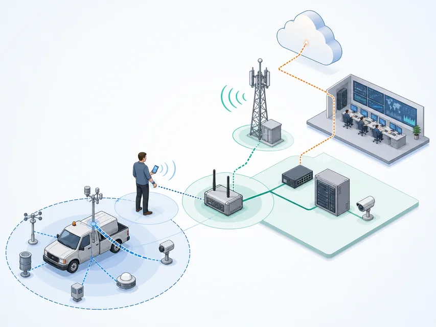

节点
传感器、手机、服务器等通信设备
追踪消息路径，判断到达与断线
 VER. 2608
Built with impress.js
VER. 2608
Built with impress.js
画出数据经过哪些设备与连接，并说明怎样确认到达、断线后怎样恢复
以门锁上报为例：先写锁连到谁、消息交给谁，再讨论蓝牙、Wi-Fi 或移动通信
传感器、手机、服务器等通信设备
有线或无线媒介，以及连接双方的接口
消息经哪些节点，从源逐跳到达宿
设备不必两两直连；要说明每一跳交给谁、失败后怎样处理
按设备功能，它是网络设备；沿消息看，它可能接收后继续转发
直接与用户、物质世界或应用交互
采集数据、处理状态、输出控制或上报结果
主要负责转发、路由、协议适配和连接管理
交换机、路由器、网关也可能检查访问权限，并提供配置和故障诊断功能
信息流开始的位置
接收消息，选定下一跳并转发
接收消息，再交给应用处理或执行控制
| 场景 | 请画／写一条路径 | 请写谁负责、失败会怎样 |
|---|---|---|
| 智能门锁上报 | 填写 | 谁采集、谁转发、谁存储 |
| 环境传感器告警 | 填写 | 说明消息下一步交给谁、断线时怎样缓存 |
| 云端下发动作 | 填写 | 谁认证、怎样确认执行、失败后怎样保护 |
| 手机控制家电 | 填写 | 手机是否用作网关 |
同一条水表链路可以既是无线、由运营商管理，又跨越城市范围
| 分类问题 | 典型类别 | 选择时要问什么 |
|---|---|---|
| 媒介 | 有线／无线 | 稳定性、移动性、干扰和敷设 |
| 建设与管理 | 公用网／专用网 | 谁建设、谁管理、谁承担责任 |
| 覆盖 | PAN／LAN／WAN | 对象距离、规模和跨区域需求 |
| 组织 | 直连／基础设施／多跳 | 中继、漫游、故障与扩展 |
分类名称不能证明消息安全到达；还要实测干扰、断线、身份校验和恢复
PAN、LAN、WAN 是覆盖尺度，不是必经层级
个域网 PAN：身边设备与个人空间
局域网 LAN：家庭、园区或校园
广域网 WAN：城市或跨区域
| 场景 | 请写优先检查条件 | 请写到现场还要核对什么 |
|---|---|---|
| 电池手环 | 填写 | 填写 |
| 校园摄像头 | 填写 | 填写 |
| 远程水表 | 填写 | 填写 |
| 工厂控制线 | 填写 | 填写 |
扩大覆盖也可能增加耗电、资费或维护工作；要按任务比较代价
设备按协议连接或广播，并通过休眠安排控制耗电
经典蓝牙可用微微网描述；低功耗蓝牙 BLE 支持广播和连接；Bluetooth Mesh 另行组织网状通信
适合大量低速率节点；协调器建网，路由器转发，终端采集／控制；网络可自组织发现多跳路径
选择直连、星形、网状或簇状时，要比较能覆盖哪里、谁管理，以及断一条连接后还有没有备用路径
设备何时睡眠、距离多远、是否冲突、密钥怎样换、路由谁维护、电池多久更换
选择时看设备数量、网关、多跳和电池，也要管理设备身份与密钥
手机、耳机、手环或门锁通过发现、配对和短距离连接交换数据
个人设备可借手机作为临时网关
协调器建立网络，路由器转发，终端节点采集或控制
适合多节点、低功耗和需要多跳覆盖的场景
| 连接组织／方案 | 请写好处 | 请写多耗什么、哪里会断 |
|---|---|---|
| 直连／星形 | 填写 | 填写 |
| 网状 | 填写 | 填写 |
| 簇状 | 填写 | 填写 |
| 手机作网关 | 填写 | 填写 |
多加一条线可能意味着多一次转发、多一份耗电和多一个需要维护的设备
视频、校园移动设备与工厂控制，对速率、移动和时延的要求不同
终端经接入点 AP 加入基础服务集 BSS；多个 BSS 经分布系统构成扩展服务集 ESS，支持漫游
让现场数据按时到达，并处理干扰、检测传输错误
按工业现场要求改进以太网，使数据及时到达，连接有备份，设备耐用且便于扩展
局域网选型要同时看带宽、移动、功耗、时延抖动和失败后的控制后果
Wi-Fi 常关心吞吐与漫游；工业控制还要保证命令在规定时间内到达
终端通过 AP 加入 BSS，AP 接入分布系统
BSS／ESS 说明接入点怎样组织服务，不表示消息依次经过的设备；终端可在覆盖区间漫游
传感器、控制器和执行器通过总线或工业以太网协同
面对电磁干扰、金属、温湿度、振动与冲击，强调时序和冗余
单位时间内实际能传多少数据，能否满足视频等业务
数据或命令能否在预期的时间范围内到达
维护人员怎样查故障、更新设备、隔离问题并恢复服务
| 场景 | 请写首要指标 | 请写需要配套的证据 |
|---|---|---|
| 家庭视频 | 填写 | 填写 |
| 车间闭环 | 填写 | 填写 |
| 电池门锁 | 填写 | 填写 |
| 校园漫游 | 填写 | 填写 |
先说清连接失败会造成什么后果，再决定带宽、时延、功耗或冗余的优先级
移动业务还要处理切换与干扰，并分清运营商和使用单位责任
终端或局域网 → 基站／网关 → 核心网 → 云服务
小区是覆盖区域，不是路径节点；不必经过所有中间网络
处理多径、干扰、多普勒、切换和漫游
小区制通过多基站、频率复用和统一协调扩展服务区域
增强移动宽带 eMBB、超可靠低时延通信 URLLC、大规模机器类通信 mMTC
运营商和使用单位要分清谁管理频谱、建设设施、支付费用、管理身份和处理故障
NB-IoT 同时属于蜂窝通信体系和低功耗广域网 LPWAN
常需移动性、较高吞吐或持续连接，可按业务选择蜂窝方案
检查切换、带宽、时延和耗电
可选 LPWAN，优先考虑续航与覆盖
NB-IoT 走运营商网；LoRaWAN 可自建或托管
LPWAN 优先续航与覆盖；LoRa 只规定调制，安全与可靠仍须验证
先判断数据、时限与运维条件，再列出仍需现场验证的一项
| 给定条件（教学假设） | 选择时怎样使用 |
|---|---|
| 每天24条，每条20字节；可延迟5分钟 | 每天仅480字节，不需高吞吐 |
| 住户分散，已有运营商覆盖，缺少网关维护人员 | 比较NB-IoT服务与实际室内覆盖 |
| 封闭园区；可架网关，有运维人员 | 比较LoRaWAN自建与维护成本 |
| 两方案均未实测电池寿命 | 不能只按宣传的续航年数下结论 |
图中展示的是组合示意；设备、网关、手机、基站和云服务各自承担一段路径
示意：PAN／LAN → 网关／手机或直达 WAN → 云／服务 → 反馈
实际组合随应用变化

写清连接设备、传输方式、耗电、访问者和断线处理，不把示意图当固定架构
| 案例 | 网络分工 | 谁维护，断线后怎么办 |
|---|---|---|
| 远程抄表 | 表计 → LPWAN → 后台 | 多久上报、耗电多少、室内有无信号、断线由谁处理 |
| 共享单车 | 车锁经蓝牙、手机蜂窝网到后台；或直连蜂窝网 | 闲置和骑行时怎样连接、谁能开锁、手机不在时怎么办 |
| 智能家居 | 家电经 PAN 或 Wi-Fi 接入家庭出口 | 带宽和电量够不够、谁能访问、断网后怎样恢复 |
MQTT 的消息代理 broker 按主题转发，仍需底层网络承载消息
| 对象或机制 | 本节例子 | 要检查什么 |
|---|---|---|
| 发布与订阅 | soil-01 → broker → 看板 | 主题相同吗，消息收到吗？ |
| QoS 0 / 1 / 2 | 至多一次／至少一次／恰好一次 | 只规定消息交付，不保证阀门仅动作一次 |
| 保留消息 retained | 新订阅者收到该主题最后一条保留消息 | 先看采样时间，旧消息不代表当前状态 |
| 应用消息编号 | message_id=m001 | 重复交付时避免重复处理 |
三个终端分别运行代理、订阅与发布；127.0.0.1 始终指本机
先指出输入文件的来源，再解释正常、重复或过期的处理结果
| 输入文件 | 来源 | 预期处理结果 |
|---|---|---|
| received.jsonl | 订阅刚收到的三条消息 | 正常、重复、过期 |
| retained.jsonl | 新订阅实际收到的旧保留值 | 过期 |
| messages.jsonl | 包内预置的固定日志 | 正常、重复、过期 |
01python inspect_messages.py --input received.jsonl未安装代理时只分析预置日志；它能验证应用判断，不能证明实际联网成功
画出消息路径，解释连接方式、到达确认与断线处理责任